এলিট সদশ্যবৃন্দ
ক্লাব প্রতিষ্ঠালগ্নে ১৯ জন সদস্য ছিল।তাদেরকে এলিট সদশ্য হিসাবে ধরা হয়।তবে এই এলিট সদশ্যের অনেককেই ক্লাব থেকে বহিস্কার করা হয়েছে।তারা বর্তমানে ক্লাবের সদশ্য না।এলিট সদশ্যরা সবাই এই ক্লাবের প্রতিষ্ঠাতা।তবে কিছু সদশ্য ক্লাব প্রতিষ্ঠায় ব্যাপক ভূমিকা রেখেছেন ।অর্থ্যাৎ তাদের আন্তরিকতা ও পরিশ্রম না থাকলে এই এলাকায় কখনো ক্লাব নামক কিছুই হতো না।
এলিট সদশ্য নং-১
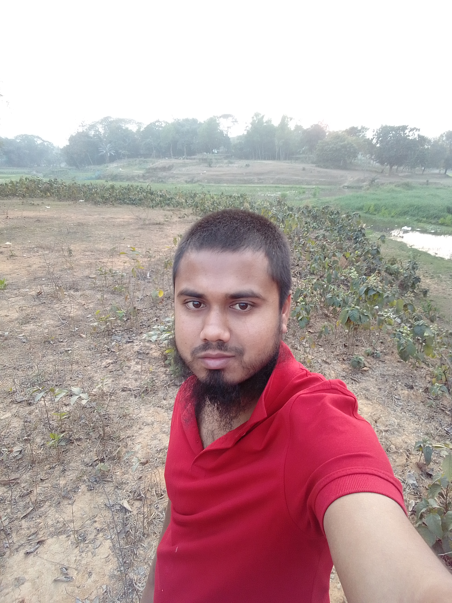মারমনিল হবি
ক্লাব প্রতিষ্ঠায় মারমনিল হবি’র ভূমিকা ৯০ ভাগ।তিনিই এই ক্লাবের স্বপ্নদ্রস্টা।তিনি মেহেদী হাসান রনি এই দুজনই সর্বপ্রথম ক্লাব গঠনের চিন্তা করেন।তাই তাদের দুজনকে এই ক্লাবের আরও পড়ৃন
স্বপ্নদ্রস্টা ও অন্যতম প্রতিষ্ঠাতা হিসাবে বিবেচনা করা হয়।এর সাথে আতিক হাসান শাহিনও জড়িত আছে।এখন পর্যন্ত মারমনিল হবি’ই ক্লাব নিয়ে সবচেয়ে বেশি ভাবেন।তার সুবিশাল চিন্তা-ধারার ক্রমানুসারেই ক্লাব সামনের দিকে এগিয়ে যাচ্ছে।তিনিই এই ক্লাবের কর্ণধার মারমনিল হবি জিনারী কানাার বাড়ির ,র আব্দুল কাদিরের ২য় সন্তান।
এলিট সদশ্য নং-২
মেহেদী হাসান রনি
ক্লাব প্রতিষ্ঠায় মেহেদী হাসান রনির ভূমিকা ব্যপক।তিনি এই ক্লাবের স্বপ্নদ্রস্টা।তিনি এবং মারমনিল হবি এই দুজনই সর্বপ্রথম ক্লাব গঠনের চিন্তা করেন।তাই তাদের দুজনকে এই ক্লাবের আরও পড়ৃন
স্বপ্নদ্রস্টা ও অন্যতম প্রতিষ্ঠাতা হিসাবে বিবেচনা করা হয়।এর সাথে আতিক হাসান শাহিনও জড়িত আছে।ক্লাব প্রতিষ্ঠাকালীন মেহেদী হাসান রনি আজিবন সভা-পতির দায়িত্বরত ছিলেন। তিনি ব্যক্তিগত জিবনে খুব বেশি ব্যস্ত থাকায় ক্লাবে তেমন সময় দিতে পারতেন না।যার ধরুন ক্লাব প্রায় ভেঙ্গে গেছিল।ক্লাবের চরম বেহাল অবস্থায়ও তিনি কার্যকর ব্যবস্থা নিতে ব্যর্থ হওয়ায় তাকে সভা-পতির পদ থেকে অব্যাহতি দেওয়া হয়।এছাড়া আরও অনেক কারন আছে প্রকাশ্যে বলা যাবে না।
এলিট সদশ্য নং-৩
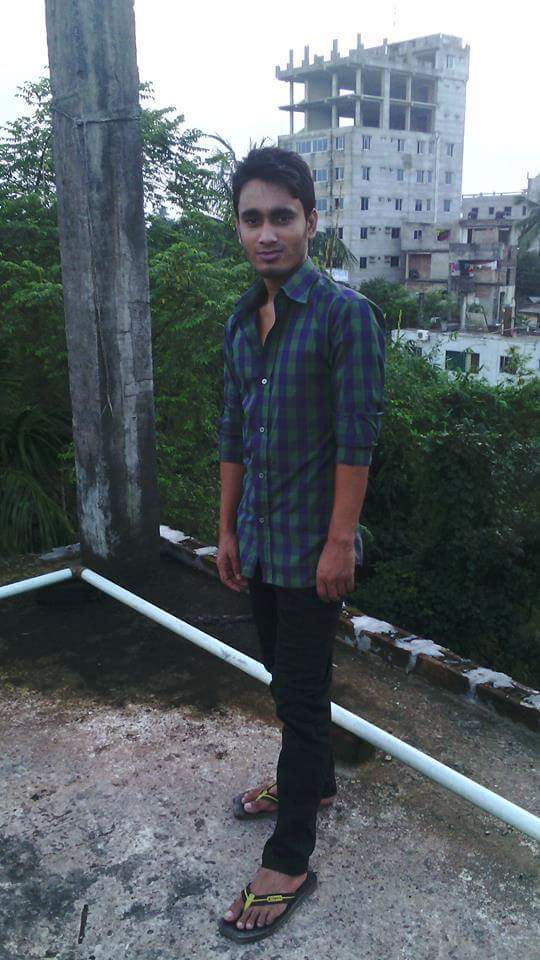আতিক হাসান শাহিন
এই ক্লাব গঠনে যে তিন জনের সবচেয়ে বেশি ভূমিকা তার মধ্যে আতিক হাসান শাহিনের ভূমিকা অন্যতম।এক সময় তিনি এই ক্লাবের সাধারন সম্পাদকের দায়িত্ব পালন করেন।তিনি আরও পড়ৃন
এই ক্লাবের জন্য অনেক অর্থ ব্যয় করেছেন নিজের পকেট থেকে।এক অজানা অভিমানে সে ক্লাব বর্তমানে দূরে আছেন।তার শুন্যতা না থাকলে ক্লাব আরো অনেক দূর এগিয়ে যেত।আশা করি তার সব অভিমান ভূলে সে আবার ক্লাবে ফিরে আসবে।এই এলাকায় খেলা-ধুলা বিস্তারে তিনি অনেক টাকা ব্যয় করেছেন।তিনি অনেক উদার মনের মানুষ।তিনি জিনারি কানার বাড়ির আব্দুস ছালামের একমাত্র পুত্র।
এলিট সদশ্য নং-৪
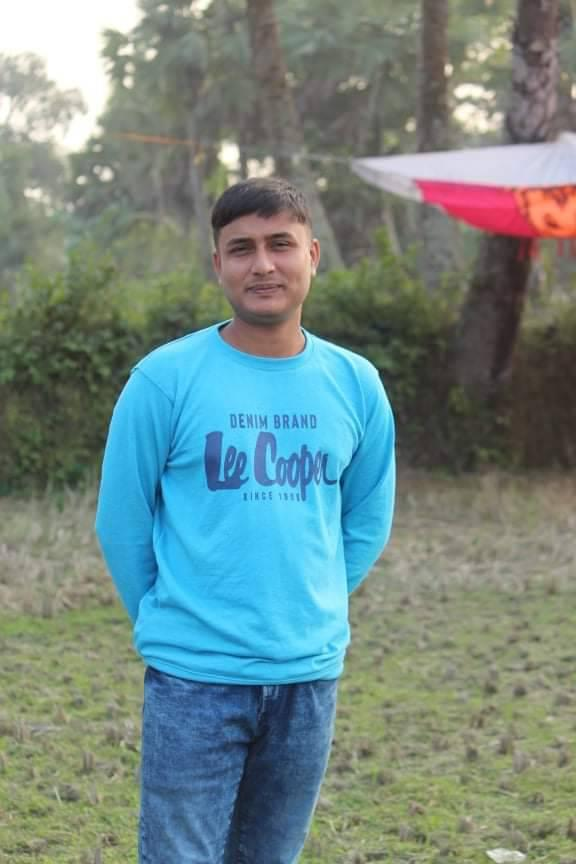রুবেল মিয়া
রুবেল মিয়া জিনারী কানার বাড়ির আব্দুল মোতালেবের ১ম সন্তান।এই এলাকায় খেলাধুলা বিস্তারে ও এই ক্লাব গঠনে এবং পরিচালনায় তার যথেষ্ট ভূমিকা রয়েছে।তার কথা-বার্তা একটু বেশি গড়ম।
স্কোর দেখুনএলিট সদশ্য নং-৫
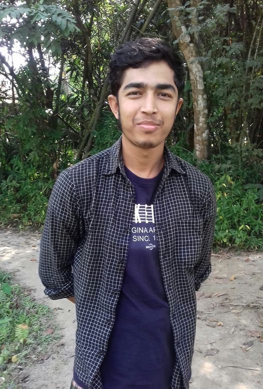জুনায়েদ সরকার
জুনায়েদ সরকার ডাকুরিয়া সুলাইমান সরকারের বাড়ির আবুল মুনসুরের ২য় সন্তান। আরও পড়ৃন
এই এলাকায় খেলাধুলা বিস্তারে ও এই ক্লাব গঠনে এবং পরিচালনায় তার যথেষ্ট ভূমিকা রয়েছে।তিনি ক্লাবের প্রতিষ্ঠাতা ক্যাশিয়ার।নিকত হিসাব-নিকাশের জন্য ক্লাবের সবাই তার খুব প্রশংসা করে।তিনি খুব ভাল ব্যাটিং করেন।তিনি কয়েক ইউনিয়নের মধ্যে সেরা ব্যাটস ম্যান(থ্রিস্টার বল দিয়ে)। বর্তমানে তিনি ক্লাবের খুবই গুরোত্বপূর্ণ সদশ্য।তিনি ক্লাবের প্রথম সারির চাদা দিয়ে থাকেন।
এলিট সদশ্য নং-৬
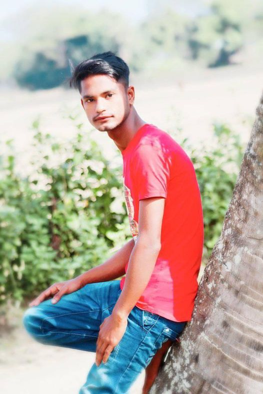লোকমান হেকিম হৃদয়
লোকমান হেকিম হৃদয় জিনারী কানার বাড়ির মোঃকাশেমের ১ম সন্তান। আরও পড়ৃন
এই এলাকায় খেলাধুলা বিস্তারে ও এই ক্লাব গঠনে এবং পরিচালনায় তার যথেষ্ট ভূমিকা রয়েছে।অনেক ছোট বয়স থেকেই তিনি খেলা-ধুলার সাথে জড়িত।তিনি সবসময় নিয়মিত চাদা দিয়ে থাকেন।ক্লাবের সকল কার্য-ক্রমে তিনি অতপ্রোতভাবে জড়িত থাকেন।অল্প বয়সে তিনি ক্লাবের দ্বিতীয় সর্বোচ্চ ম্যাচ খেলেছেন।
এলিট সদশ্য নং-৭
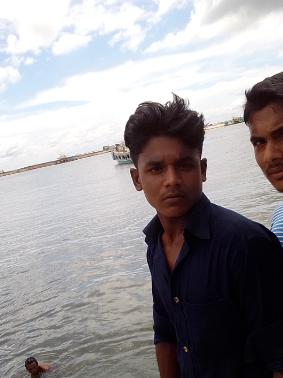নাঈম ইসলাম
নাঈম ইসলাম জিনারী কানার বাড়ির মোঃমজিবুরের ১ম সন্তান। আরও পড়ৃন
এই এলাকায় খেলাধুলা বিস্তারে ও এই ক্লাব গঠনে এবং পরিচালনায় তার যথেষ্ট ভূমিকা রয়েছে।এই ক্লাবে যদি একজন সদশ্যও না থাকে তবে নাঈম ইসলাম থাকবে।তাকে ক্লাবের পারমানেন্ট সদশ্য হিসাবে বিবেচনা করা হয়।তিনি সব সময় উচিত কথা বলে।উচিত কথা বলার জন্য লোকে তাকে দেখতে পারে না।তিন খুব ভাল উইকেট কিপিং করতে পারে।তার মত দ্রুত স্ট্যাম্পিং মনে হয় মুশফিকও করতে পারি না।তিন খুব ভাল ব্যাটিংও করে থাকেন।একেবারে পারফেক্ট ব্যাটিং তিনি করে থাকেন।বলারের গতির কাছে তিনি কখনো পরাস্ত হন না।গতি বল খেলতে তিনি ভালবাসেন।তিনি খুব উদার মনের মানুষ।
এলিট সদশ্য নং-৮
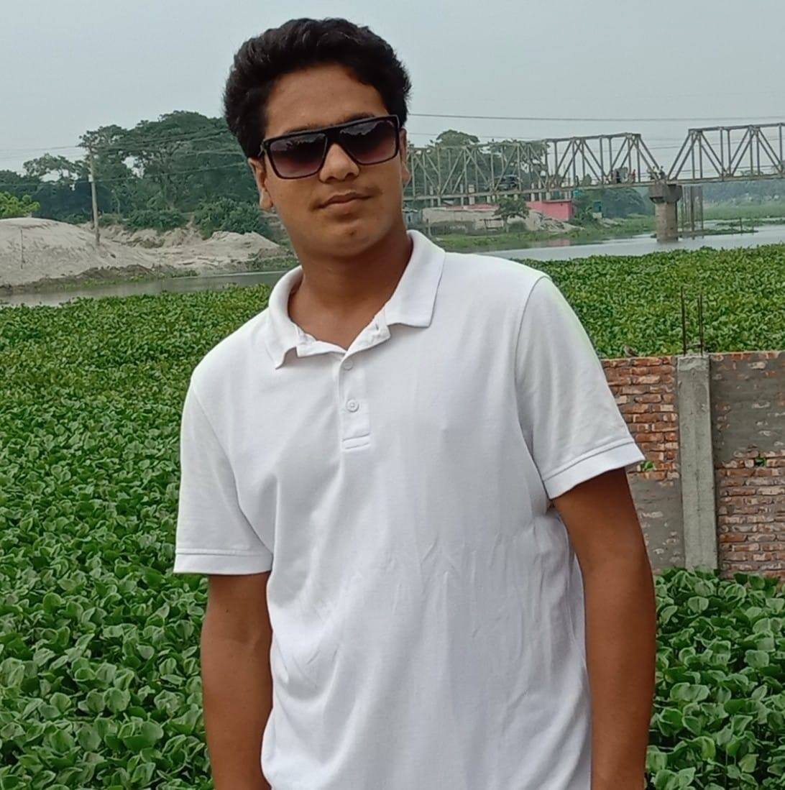দেলুয়ার হোসেন মাহাবুব
দেলুয়ার হোসেন মাহাবুব জিনারী কানার বাড়ির মোঃতফাজ্জল হোসেনের ২য় সন্তান। আরও পড়ৃন
এই এলাকায় খেলাধুলা বিস্তারে ও এই ক্লাব গঠনে এবং পরিচালনায় তার যথেষ্ট ভূমিকা রয়েছে।অনেক ছোট বয়স থেকেই তিনি খেলা-ধুলার সাথে জড়িত।তিনি সবসময় নিয়মিত চাদা দিয়ে থাকেন।ক্লাবের সকল কার্য-ক্রমে তিনি অতপ্রোতভাবে জড়িত থাকেন।অল্প বয়সে তিনি ক্লাবের তৃতীয় সর্বোচ্চ ম্যাচ খেলেছেন।তিনি একসময় ক্লাবের ক্যাশিয়ারের দায়িত্ব পালন করেন।হিসাব-নিকাশে তিনি খুবই পারদর্শী।
এলিট সদশ্য নং-৯

আসিকুজ্জামান জাহাঙ্গীর
আসিক জিনারী কানার বাড়ির মোঃবাহারউদ্দিনের সর্বকণিষ্ঠ সন্তান। আরও পড়ৃন
এই এলাকায় খেলাধুলা বিস্তারে ও এই ক্লাব গঠনে এবং পরিচালনায় তার যথেষ্ট ভূমিকা রয়েছে।অনেক ছোট বয়স থেকেই তিনি খেলা-ধুলার সাথে জড়িত।তিনি সবসময় নিয়মিত চাদা দিয়ে থাকেন।ক্লাবের সকল কার্য-ক্রমে তিনি অতপ্রোতভাবে জড়িত থাকেন।তিনি ক্লাবের দ্বিতীয় সেরা ফিল্ডার।তিনি মূলত হার্ড-হিটিং ব্যাট করে থাকেন।তার কব্জিতে প্রচুর জোর রয়েছে।দেড়িতে বলিং শেখেও তিনি ক্লাবের সেরা বলারে পরিনত হয়েছিলেন।বর্তমানে তার বলিং অ্যাকশনে ত্রুটি থাকার কারনে বলিং থেকে দূরে আছে। এককথায় তিনি একজন ভাল অলরাউন্ডার।দলের প্রয়োজনে তিনি কিপিংও করে থাকেন।
এলিট সদশ্য নং-১০
এহছানুল হক
এহছানুল হক ডাকুরিয়া সিরাজ চেয়ারম্যানের বাড়ির মোঃকাশেম মুন্সির ৩য় সন্তান। আরও পড়ৃন
এই ক্লাব গঠনে যথেষ্ট ভূমিকা রয়েছে।তিনি সবসময় নিয়মিত চাদা দিয়ে থাকেন।ক্লাবের সকল কার্য-ক্রমে তিনি জড়িত থাকার চেষ্টা করে থাকেন।তিনি নিঃস্বার্থ একজন মানুষ। খেলা-ধুলার সাথে তেমন জড়িত না থাকলেও সবার সাথেই থাকেন।মাঝে-মধ্যে খেলা-ধুলাও করেন।তবে নিয়মিত চাদা দিয়ে থাকেন।
এলিট সদশ্য নং-১১

ইয়াসিন সরকার
ইয়াসিন সরকার ডাকুরিয়া সুলেমান সরকারের বাড়ির আবুল মুনসুরের ৩য় সন্তান। আরও পড়ৃন
এই এলাকায় খেলাধুলা বিস্তারে ও এই ক্লাব গঠনে ভূমিকা রয়েছে।অনেক ছোট বয়স থেকেই তিনি খেলা-ধুলার সাথে জড়িত।তিনি কয়েক ইউনিয়নের মধ্যে নামকরা একজন বোলার।ক্লাবের সেরা ফিল্ডার তো বটেই কয়েক উপজেলার মধ্যে তিনি সেরা ফিল্ডার।তিনি হার্ট-হিটিং ব্যাট করে থাকেন। তিনি বর্তমানে আবহানী ক্লাবে খেলতেছেন।তিনি ফার্ফেক্ট এক জন অল-রাউন্ডার।
এলিট সদশ্য নং-১২
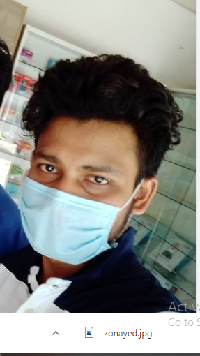আল-আমীন সরকার
আল-আমিন ডাকুরিয়া সোলাইমান সরকারের বাড়ির রিটনের ছেলে। আরও পড়ৃন
এক সময় তিনি ক্লাবের সাধারন সম্পাদক ছিলেন।তার আমলে ক্লাব খুব জমজমাট ছিল।তার আমলেই বঙ্গবন্ধু স্মৃতি ক্রিকেট টুনামেন্ট ১ম বার সফলভাবে আয়োজন করা হয়েছিল।তিনি ক্লাব ঘড় বানানোর স্বপ্নদ্রষ্টা।তার আমলে তিনি খুব চেষ্টা করেছিলেন ক্লাব ঘড় বানানোর।
এলিট সদশ্য নং-১৩/h3> 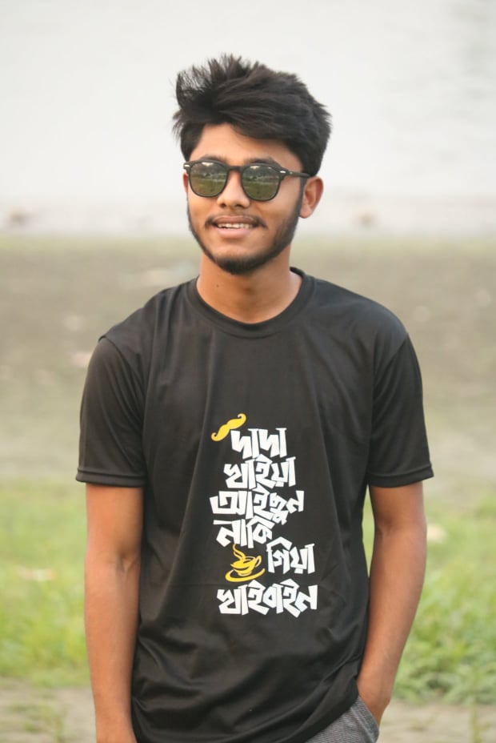
বক্তারুজ্জামান
বক্তারুজ্জমান ডাকুরিয়া গ্রামের মোঃনজরুল ইসলামের ২য় সন্তান। আরও পড়ৃন
তিনি বাম হাতি ফাস্ট বোলার ।এক সময় ক্লাব তার বোলিংয়ের ওপর নির্ভর করতো।কারন তখন ক্লাবে খুব কম সংখ্যখ বোলার ছিল।ক্লাবের নিয়ম না মানা ও চাদা না দেয়ার কারনে তাকে ক্লাব থেকে বহিস্কার করা হয়েছে।
এলিট সদশ্য নং-১৪
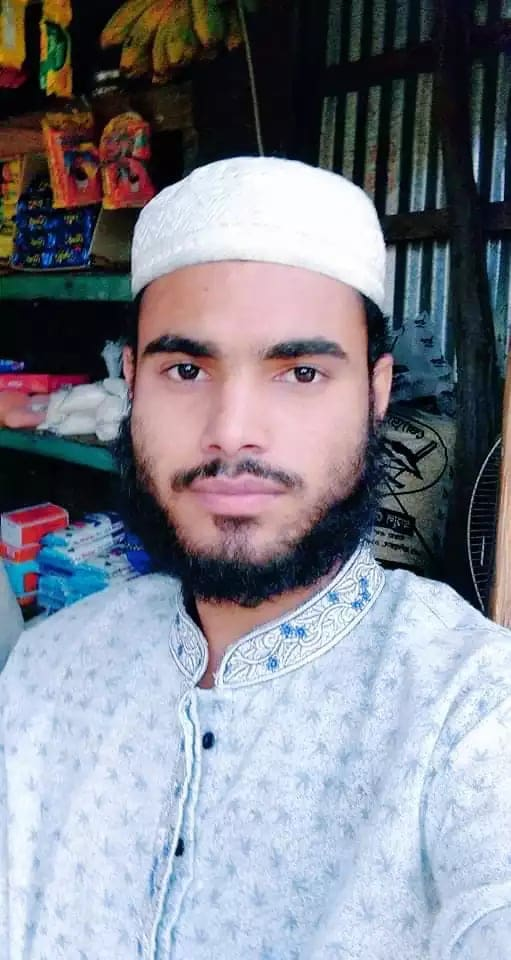রায়হান কবির রানা
রায়হান কবির জিনারী কানার বাড়ির মোঃরুহুল আমীনের ২য় সন্তান।চাদা না দেয়ার কারনে তাকে ক্লাব থেকে বহিস্কার করা হয়েছে।
স্কোর দেখুনএলিট সদশ্য নং-১৫
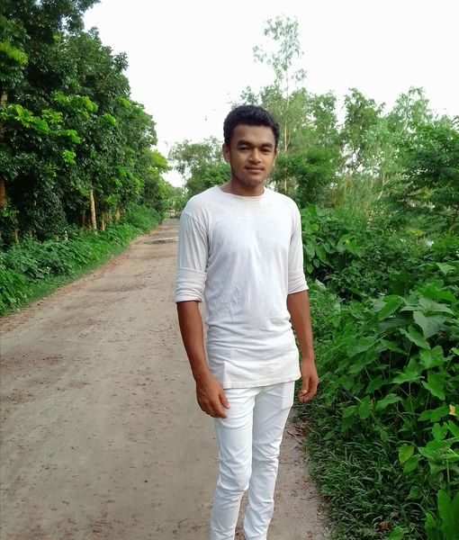রমজান আলী
তিনি জিনারী কানার বাড়ির মর্তুজ আলীর একমাত্র সন্তান। আরও পড়ৃন
ছোট বেলা থেকেই সব কিছুতেই তিনি ফাস্ট ছিলেন।খুব দূরন্ত ছিলেন।মাছ ধরা, পাখি শিখার করা সহ অনেক কিছই করতো তার দুরন্ত মন।কিন্তু অল্প বয়সে মা-বাবা মারা যাওয়ায় জিবিকার তাগিদে বাড়ি ছাড়েন। খুবই বিচিত্র তার জিবন।খুবই বড় মনের মানুষ তিনি।বর্তমানে তিনি ময়মনসিংহে বসবাস করেন।
এলিট সদশ্য নং-১৬
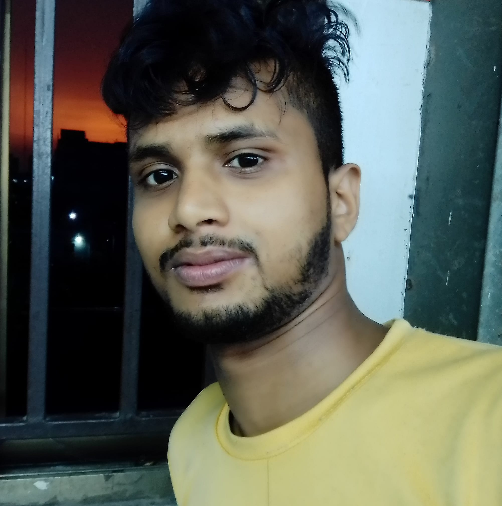আনছারুল ইসলাম
আনছরুল ইসলাম ডাকুরিয়া খলিফা বাড়ির আব্দুল মন্নাছের ৩য় সন্তন। আরও পড়ৃন
তিনি এই ক্লাবের নিয়মিত সদশ্য।তিনি নিয়মিত চাদা পরিশোধ করে থাকেন। তিনি বল করার সময় স্ট্যাম্পের পেছন থেকে করে ফেলতেন যা তখনকার সময় নো ধরা হত।এজন্য তিনি বল করে স্বস্থি পেতেন না। মারমনিল হবি’র দলের হয়ে তিনি ভাল বল করেছেন।
এলিট সদশ্য নং-১৭
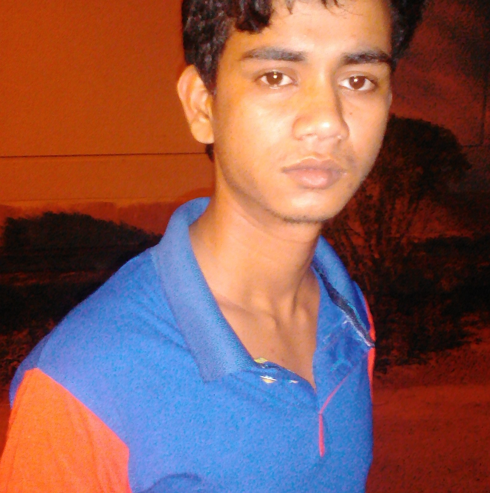আলি মিয়া
আলি জিনারী কানার বাড়ি মরহুম হাসিমউদ্দিনের ৫ম সন্তান। আরও পড়ৃন
অনেক ছোট বয়স থেকেই তিনি খেলা-ধুলার সাথে জড়িত । ক্লাবের সকল কার্য-ক্রমে তিনি জড়িত থাকার চেষ্টা করে থাকেন।তিনি ভাল ফুটবল খেলে থাকেন।
এলিট সদশ্য নং-১৮
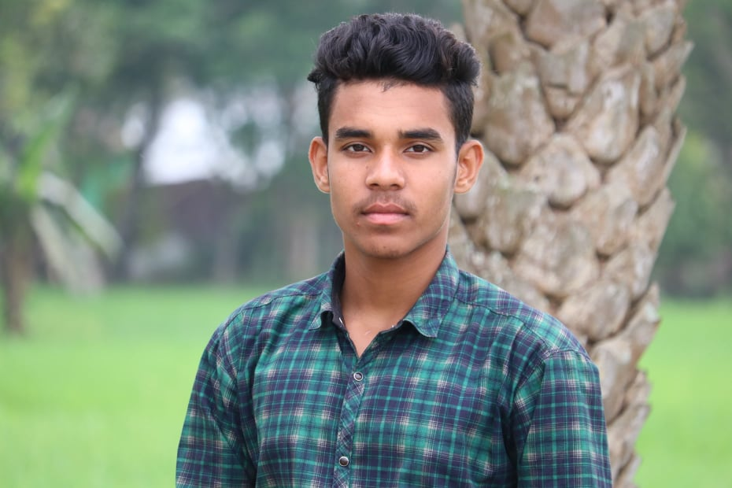মারুফ মিয়া
মারুফ তেতুলিয়া গ্রামের হাবিবুর রহমানের ২য় সন্তান। আরও পড়ৃন
খুবই বাচ্চা বয়স থেকে তিনি খেলা-ধুলার সাথে জড়িত।ছোট থেকেই তিনি ভাল ক্রিকেট খেলে থাকেন।বর্তমানে তিনি ক্লাবের সেরা ব্যাটসম্যান তিনি যদিও তার বয়স এখন খুব কম।তিনি ভাল উইকেট কিপিংও করতে পারেন। তিনি বলও করে থাকেন।বড়দের যথাযথ সম্মান তিনি করে থাকেন।
এলিট সদশ্য নং-১৯
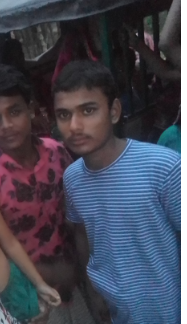মাহমুদুল হাসান রিয়াদ
মাহমুদুল হাসান রিয়াদ জিনারী কানার বাড়ির আব্দুল মোতালেবের ৩য় সন্তান। আরও পড়ৃন
তিনি ক্লাবের এক নিয়মিত সদশ্য।তিনি মারমনিল হবি’র সহযোগি হয়ে ক্লাবের জন্য ব্যপক কাজ করে থাকেন।